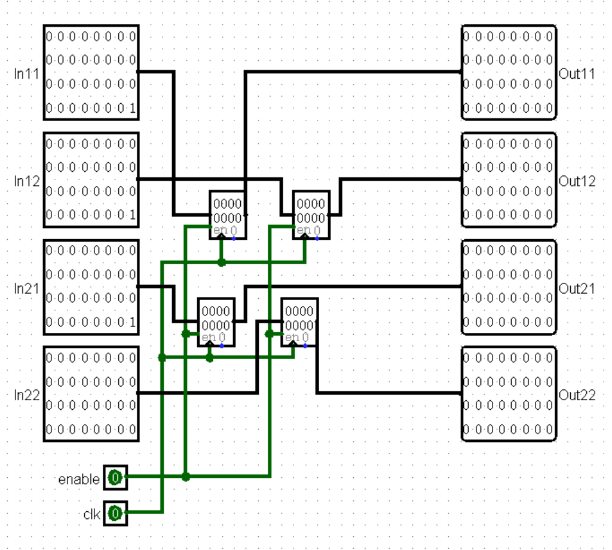
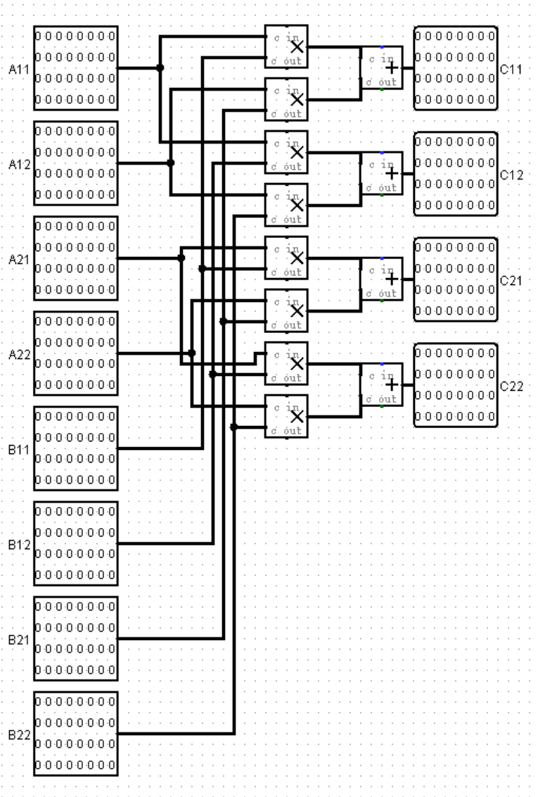
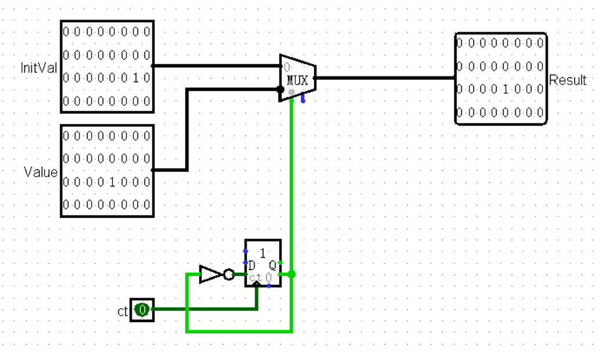

你好！本文章为测试博客用的文章，但是里面的内容确实可以帮到大家！
这篇文章的”搭出完整电路“部分实际上已经完工，考虑到文章本意是记录自己的学习过程，以及发布后可能引发的学术不端问题，目前暂时删去，待CO pre结束后完整文章才会放出，感谢理解！
题意简述
这个题的大意就是，在输入端给定一个32bit的无符号数 N，计算出斐波那契数列的第 N 项的最后32bit并输出。
其中：
- 题目对于斐波那契数列的定义是： f0=0,f1=1,∀n≥2,fn=fn−1+fn−2。
- 使用的主模块名称应为
main。
- 在计算出结果之前，输出端应始终置为0，否则视为提交答案。
- 需要在64个时钟周期内给出答案。
思路分析
引入性质
这里我们不加说明的给出几个性质，没有这个性质的话后面讲述实在是推不下去：
- (a+b)modm=(amodm+bmodm)modm。
- (a∗b)modm=(amodm∗bmodm)modm。
其中，xmodm 表示 x 除以 m 后的余数。
之所以给出这个，是因为我们要注意到一个事情：对 x 取结果的低32bit相当于求 xmod232，而上述性质保证了一个好消息：只要是在做加法/减法/乘法，那么我们直接取操作数的低32bit进行运算，结果和取原数进行运算是一样的。
换句话说，我们不需要考虑如何表示一个大数，只需要把这个大数的低32bit拿来运算即可。
Why not brute force？
显然，计算斐波那契数列有两个为人熟知的方法：逐项计算，通项公式。
我们考虑逐项计算的思路，会发现这玩意在最坏情况下再怎么样也得耗掉最多40亿个时钟周期（一个时钟周期算出来一个值），哪怕我们手工推一下式子之后，设计一个一次能算4项或者8项的电路，也远远达不到64个时钟周期的高要求。换句话说，我们希望能有一个时间复杂度为 O(logn) 的方法，而非 O(n) 的。
那么，我们还知道斐波那契数列有一个经典的通项公式：
Fn=51((25+1)n−(25−1)n)
如果说你知道快速幂这个东西的话，会发现在不考虑数字运算本身需要的时间的情况下，我们确实可以用 O(logn) 的时间干出来这个玩意。
但是很遗憾，这玩意涉及分数和无理数，而且直接计算出来 Fn 再取低32bit也显然不现实（数字太大了！），所以这条路也被锁死了。
不过，我们根据这两个失败的暴力确定了两件事情：
- 我们也许可以用类似计算数的快速幂的思路，在 O(logn) 的时间复杂度内计算结果。
- 这个电路在计算的时候只能保留每次计算结果的低32bit，否则电路肯定存不下。
那么接下来，我们需要横插一杠子，先来引入一个看起来和这玩意八竿子打不着的东西。
矩阵乘法：用有结合性的东西表达递推公式
虽然说起来很唐突，但是我们考虑一下如何用矩阵乘法表达斐波那契数列的递推公式。
如果我们用 2×1 的向量记录斐波那契数列的值，第 n 个向量 Fn 记录 fn+1 和 fn 的值的话，那么就有：
Fn=[fn+1fn]=[1110][fnfn−1]=[1110]Fn−1=[1110]([1110]Fn−2)=[1110]([1110]([1110]Fn−1))=…
从这个视角来看，之所以逐项计算的暴力消耗的时间太长了，就是因为我们在计算这一大堆矩阵乘法的时候，每次都被强制选择了最右边的两个矩阵相乘，导致计算这些矩阵相乘的时候，没有什么可以加速的环节。
但是实际上，我们知道矩阵乘法是有结合性的，而且这里面的几乎所有矩阵都是同一个，所以我们完全可以用矩阵的幂简写出来这一串式子：
Fn=[1110]nF0=[1110]n[10]
这样转写之后，似乎我们还是要做 n 次矩阵乘法，因为写成幂次只是改变了一下乘法的结合顺序之后的结果。
快速幂：不仅可以快速算数的幂次，也可以算方阵的幂次
但是我们考虑一下程序设计基础课上的某次上机题\练习题：给定正整数 a,b,m<230，计算 abmodm 的结果。
这里我们遇到了跟上面一样的困境：我们不能逐个计算出来 a1,a2,a3,…,ab 的结果，因为 b 太大了。
那么当时我们是怎么解决这个问题的呢？
我在这里给出一个引导：如果你预先知道 a1,a2,a4,a8,a16,…,a2n 的结果，那么对任意正整数 b，你可以算出 ab 的结果吗？
答案是肯定的，我们可以把 b 转写成二进制表示：b=…b5b4b3b2b1b0，那么答案一定可以写成这样：
ab=a…b5b4b3b2b1b0=a⋯+25b5+24b4+23b3+22b2+21b1+20b0=⋯×a25b5a24b4a23b3a22b2a21b1a20b0
而我们注意到，当 b<230 的时候，上面的二进制表示最多只有低 30 位可能是 1，那么这样就可以做到以 O(logb) 的时间计算出来 ab 了。
而对于 a1,a2,a4,a8,a16,…,a2n 的处理来说，我们只需要根据 a2n=a2n−1a2n−1 递推出来即可，这个处理次数也和 b<230 相关，最多计算 O(logb) 次也能结束，所以总的时间复杂度就是 O(logb) 了。
并且其实我们注意到了一点：这个过程里，我们并不要求底数的乘法具有交换性，只要底数的乘法有可结合性，这个快速幂的算法就是成立的。
那么，如果底数不是数，而是方阵呢？
矩阵+快速幂：只用计算小整数，而且飞快
回顾一下我们之前写出来的式子：
Fn=[1110]nF0=[1110]n[10]
如果我们用类似上述的快速幂的方法思考，那么我们可以提出这样一个思路：
（我们记录上述作为“底数”的方阵为 A，2×2 单位方阵为 I）
- 预处理出 A1,A2,A4,⋯,A2n。
- 记录矩阵 C，初始时刻令 C=I。
- 遍历 n 的每一位，当 n 的第 i 位为 1 时，我们计算C×A2i，其结果赋值给 C。
- 遍历结束之后，计算 C×F0，也就相当于得出了 fn。
如果我们先预处理，预处理结束之后再遍历 n 的每一位的话，那么至少要计算64次，其实不是很好（毕竟预处理什么的也要花时间）。
但是实际上，预处理这一步是可以跟着 C 的计算走的。我们完全可以在处理出 A2i 的同时，就看 n 的第 i 位是否为 1，那么只考虑计算来说就只需要花费32个时钟周期，就算加上杂七杂八的预处理花费的周期也绝对够通过的了。
理论存在，实践开始
现在是时候让我们的理论变成电路了。
思路细化
具体来说，我们的思路可以具体到以下过程：
- 在第一个时刻，初始化矩阵 Base=A,Result=I，并将 N 存入寄存器中。
- 接下来，只要寄存器中保存的 N 不为 0，就将下一时刻的 Base 赋值为 Base×Base，将下一时刻的 N 赋值为逻辑右移一位的结果，若此时 N 最低位为 1，则下一时刻的 Result 为 Result×Base，否则为 Result。
- 当寄存器中保存的 N 为 0 时，输出 Result1,2（即 fn）。
拆分功能
从上面的过程可以看出来，我们要表示出一个 2×2 的矩阵，同时要计算多次的矩阵乘法。那么我们最好是有两个模块，一个用来储存矩阵，一个用来计算矩阵乘法。
我是这样做的：

这里我们存储了一个大小为 2×2，元素均为32bit正整数的矩阵。尽管本质上我们只是把四个寄存器打包在了一起，但是每次贴一个模块总比贴四个寄存器+捋出来线路要好得多。

这里我们做了一个用于计算 2×2 的矩阵乘法的模块。由于只保留结果的低32bit，所以实际上不需要处理进位之类的问题。

此外，由于这里面涉及大量的赋初始值的操作，所以我额外搞了一个单次选择InitVal的模块。这里的Counter是跟着下降沿变化的。
搭出完整电路
孩子们，自己搭吧，我感觉写到这其实已经给的够完整的了（
EX：实际上……也许通项公式也不是不能用？
尽管我并没有为此搞出具体的电路，但是考虑到肯定有人会希望了解一点新方法，所以我把这个脑洞记录在这里。
我们考虑一个事情：实际上，斐波那契数列一定是个正整数数列，这也就意味着通项公式里的无理数和分数都会消失，仅仅剩下一个整数。而实际上，运算过程中出现的所有结果都应该形如 a+b5 这般。
所以，也许我们可以仿照矩阵快速幂的思路，设计一个存储 a+b5 的模块？
当然，如果是保留低32bit，而不是对某个奇数取模的话，这个做法很可能不可行，因为我们无法很好的处理 21 这个东西。不过，如果是诸如 ”对 998244353 取模“的限制条件的话，那这个做法是一定可行的。